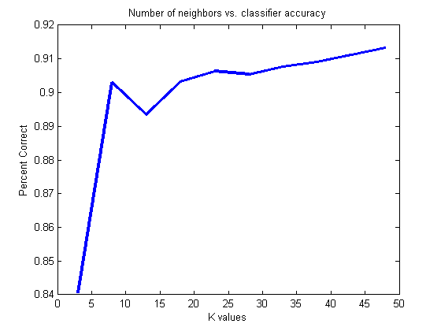

The Pattern Recognition Toolbox Engine
Contents
In the Pattern Recogntion toolbox, all actions (classification, regression, etc...) are implemented as prtAction objects. All prtAction objects share fundamental operations such as training, running and validating results share this common API. There are 4 methods, train, run, crossValidate, kfolds, and optimize.
Training
Training is the first fundamental method in the Pattern Recognition Toolbox. Training occurs whenever a PRT object needs to learn some parameters from the data. All PRT objects require that training be done before the run function can be called. Training can be supervised or unsupervised, depending on the action. Supervised training makes use of labeled PRT data sets. A common example of supervised training is classification, where a classification objsct is trained using labeled datasets, and then performs classification on an unlabeled data set. For example:
ds = prtDataGenUnimodal; classifier = prtClassGlrt; classifier = classifier.train(ds);
Note that ds is a labeleled prtDataSetClass object. The object 'classsifier' is now a trained generalized likelihood ratio test classifier.
classifier.isTrained
ans =
1
Unsupervised learing is when labels are not necessary for training. An example of this would be clustering. Suppose we remove the labels from ds, and train a K-means clustering algorithm:
ds = ds.setY([]); % setY is a shortcut for setTargets % Create a K-means clustering object with 2 clusters. cluster = prtClusterKmeans('nClusters', 2); cluster = cluster.train(ds);
The 'cluster' object is now a trained prtClusterKmeans object, and the run function can be invoked. Note, if you try to train a supervised object with unlabeled data, you will get an error. If you train an unsupervised object with labeled data, the labels are ignored.
Run
The next fundamental method in the Pattern Recognition Toolbox is the run function. Invoking the run method calls whatever functionaly the prtAction object implements. For example, calling run on a prtClassGlrt object will perform the likelihood ratio test and output the likelihood ratio values. The result will be stored in a prtDataSet.
For example, create a new dataset, drawn from the same distribution as our training dataset ds:
dsTest = prtDataGenUnimodal;
Now, call the run function, and pass the test data set:
result = classifier.run(dsTest)
result =
prtDataSetClass
Properties:
nFeatures: 1
featureInfo: []
data: [400x1 double]
targets: [400x1 double]
nObservations: 400
nTargetDimensions: 1
isLabeled: 1
observationInfo: []
name: 'prtDataGenUnimodal'
description: ''
userData: [1x1 struct]
nClasses: 2
uniqueClasses: [2x1 double]
nObservationsByClass: [2x1 double]
classNames: {2x1 cell}
isUnary: 0
isBinary: 1
isMary: 0
isZeroOne: 1
hasUnlabeled: 0
Have a look at the first few elements of the result dataset:
result.getX(1:5) % getX() is a shortcut for getObservations()
ans = -10.2214 -8.1628 -5.3055 -5.1473 -11.2557
The values in results.observations correspond to the values of the likelihood ratio test for each observation in dsTest, as performed by the classifier that was trained with the data from the dataset ds. To make a decision based on these outputs, you will need to use a prtDecision Object.
The cluster object operates in exactly the same way:
result = cluster.run(dsTest)
result =
prtDataSetClass
Properties:
nFeatures: 2
featureInfo: []
data: [400x2 double]
targets: [400x1 double]
nObservations: 400
nTargetDimensions: 1
isLabeled: 1
observationInfo: []
name: 'prtDataGenUnimodal'
description: ''
userData: [1x1 struct]
nClasses: 2
uniqueClasses: [2x1 double]
nObservationsByClass: [2x1 double]
classNames: {2x1 cell}
isUnary: 0
isBinary: 1
isMary: 0
isZeroOne: 1
hasUnlabeled: 0
However, the output is different for clustering. In this case the elements are assigned to a particular cluster:
result.getX(1:5,:)
ans =
1 0
1 0
1 0
1 0
1 0
Indicating that the first 5 results correspond to either class 1 or class 2. Note in clustering there is some ambiguity because cluster labeling is arbitrary.
Cross Validation
Cross validation allows you to perform training and running of an action in one command, by partitioning a labeled dataset into training and test data using keys. This also ensures that all data will be used for both training and testing. To illustrate, here is an example of how to use this functionality with a PRT clustering object:
keys = mod(1:ds.nObservations,3)'; % The keys will have values 1, 2 and 3
result = cluster.crossValidate(ds,keys);
This divides the dataset ds into 3 partitions, or folds. To test the first fold, the classifier will first be trained with the 2nd and 3rd folds. Then the classifier will be run using the data in the 1st fold. This will be repeated for all folds.
The keys must be a single column vector, with the same number of observations in the data set. In the example above, the first observation corresponds to key 1, the second to key 3, the third to key 3, and the 4th corresponds to key 1 again, and so forth.
K-folds
In the above example of cross validation, the user manually picked which data belonged to which fold. An alternative method is to use the kfolds function. When calling kfolds, specify the number of folds you would like the data divided into. Kfolds will then randomly subdivide the data into the specified number of folds, and perform cross validation. For example:
nFolds = 3; result = cluster.kfolds(ds,nFolds);
A final note about cross validation and kfolds, there are some actions that cross validation does not make sense, or is not possible (certain forms of outlier removal for example). In this case, a flag is set, indicating that cross-validation is not a valid operation, and calling crossValidate or kfolds on such an object will error.
Optimize
Optimize is a function that allows the user to specify a range of values for a single parameter, and exhaustively determine which value of the parameter gives the best performance. The prtAction is run for every value of the parameter, and the performance is evaluated by a function specified in a function handle. Consider the following example, where we attempt to determine the optimal number of nearest neighbors for a K-nearest neigbor classifier:
ds = prtDataGenBimodal; % Load a data set knn = prtClassKnn; % Create a classifier kVec = 3:5:50; % Create a vector of parameters to % optimize over % Optimize over the range of k values, using the area under the % receiver operating curve as the evaluation metric. Validation % is performed by a k-folds cross validation with %10 folds as specified by the call to prtEvalAuc. [knnOptimize, percentCorrects] = ... knn.optimize(ds,@(class,ds)prtEvalAuc(class,ds,10), 'k',kVec); plot(kVec, percentCorrects); xlabel('K values'); ylabel('Percent Correct'); title('Number of neighbors vs. classifier accuracy')